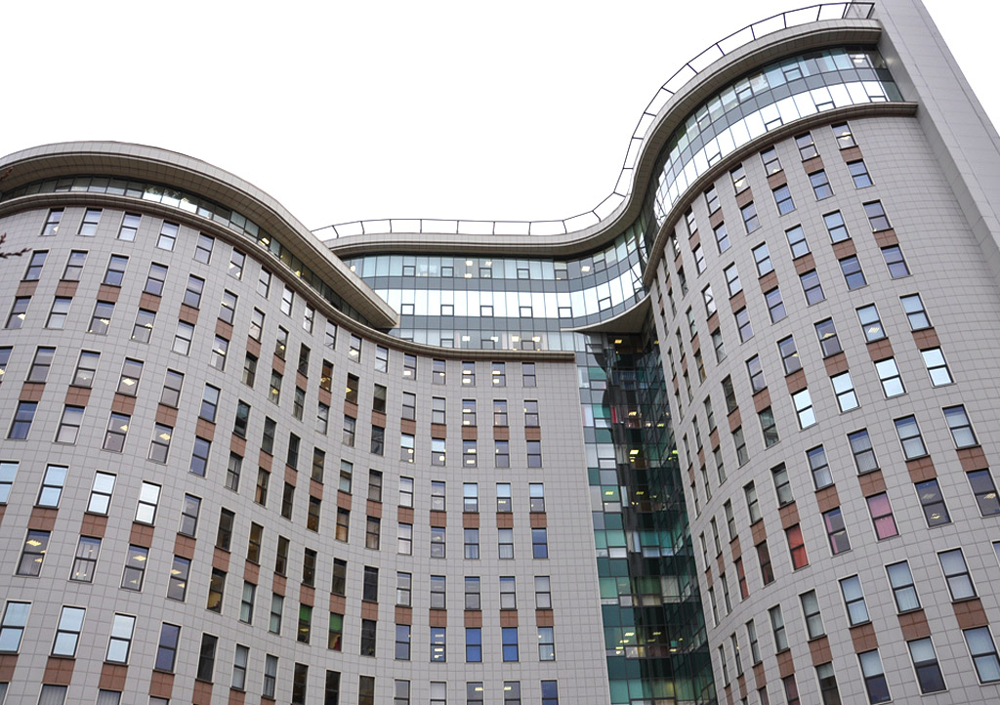
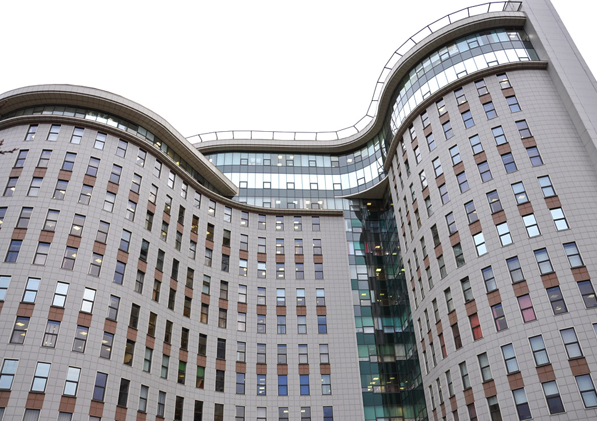

Получить первичную консультацию
по строительству
ВИДЫ СТРОИТЕЛЬСТВА
ОСНОВНЫЕ НАПРАВЛЕНИЯ РАБОТЫ
-
Торговые центры
Бизнес-центры
Кинотеатры -
Жилые дома
Гостиницы
Общественные здания -
Производственные
здания
Складские
комплексы
ФУНКЦИИ АДАМАНТ-СТРОЙ В СТРОИТЕЛЬСТВЕ
ОСНОВНЫЕ ЗАДАЧИ В СТРОИТЕЛЬСТВЕ
Технический заказчик
Технический заказчик – лицо, которое от имени застройщика заключает договоры на выполнение инженерных изысканий, на подготовку проектной и рабочей документации, на строительство, реконструкцию, капитальный ремонт объектов капитального строительства, подготавливает задания, предоставляет материалы и документы
Генпроектирование
Генеральное проектирование – комплекс услуг по проектированию объектов строительства и реконструкции от стадии сбора исходных данных для проектирования, разработки проектной и рабочей документации, согласования проектных решений в установленном порядке до осуществления авторского надзора за строительством
Генеральный подрядчик
Генеральный подрядчик – это юридическое лицо, которое отвечает по договору за исполнение полного комплекса работ по строительству, организует работу субподрядчиков, несет ответственность за достижение результата и качество работ
ФАКТЫ О КОМПАНИИ
ОПЫТ И РЕСУРСЫ АДАМАНТ-СТРОЙ
 
